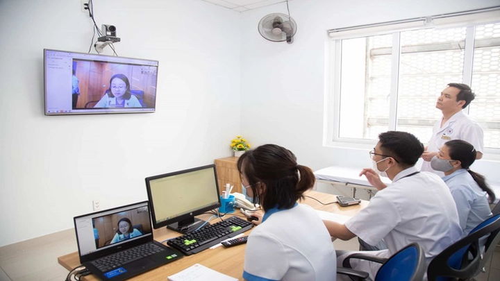
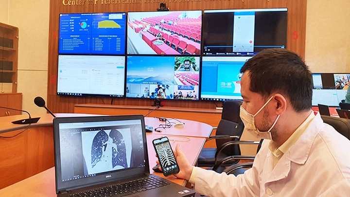
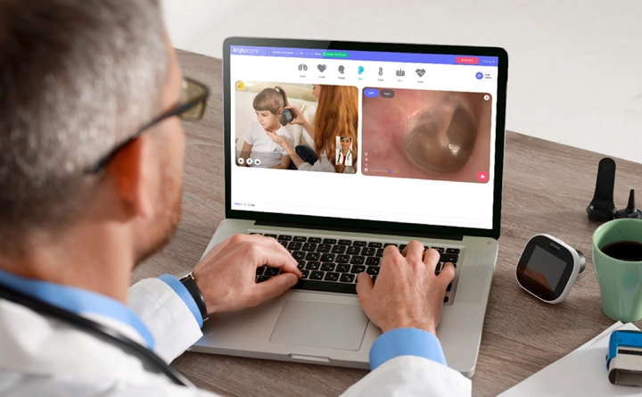

Bùng nổ y tế từ xa tại Việt Nam trong thời đại số
Trong thời đại công nghệ số, y tế từ xa (Telemedicine) trở thành giải pháp tiên tiến giúp kết nối bác sĩ và bệnh nhân mọi lúc, mọi nơi. Nhờ các nền tảng trực tuyến, video call và ứng dụng di động, người bệnh có thể nhận tư vấn, chẩn đoán và theo dõi sức khỏe mà không cần đến bệnh viện. Điều này đặc biệt hữu ích cho những vùng nông thôn, hải đảo hoặc những người hạn chế di chuyển.
Bên cạnh việc hỗ trợ người bệnh, y tế từ xa còn giúp giảm tải cho các bệnh viện và phòng khám khi lượng bệnh nhân tăng cao. Việc áp dụng công nghệ thông tin trong y tế không chỉ tối ưu hóa quy trình khám chữa bệnh mà còn nâng cao hiệu quả quản lý dữ liệu và chăm sóc sức khỏe cộng đồng.
Tại Việt Nam, y tế từ xa đang dần trở thành một phần không thể thiếu trong hệ thống y tế hiện đại, tạo điều kiện cho việc hội chẩn từ xa, giám sát bệnh nhân mãn tính và phối hợp giữa các cơ sở y tế. Đây là bước tiến quan trọng, hướng tới một nền y tế thông minh, kết nối và bền vững, đáp ứng nhu cầu chăm sóc sức khỏe ngày càng cao của người dân.
1. Y tế từ xa là gì?
Y tế từ xa là hình thức cung cấp dịch vụ y tế mà bác sĩ và bệnh nhân không cần gặp trực tiếp, thông qua các thiết bị điện tử, ứng dụng di động hoặc nền tảng trực tuyến. Người bệnh có thể nhận tư vấn, chẩn đoán, theo dõi tình trạng sức khỏe và nhận hướng dẫn điều trị ngay tại nhà, tiết kiệm thời gian và chi phí đi lại. Giải pháp này đặc biệt quan trọng đối với những người sống ở vùng nông thôn, vùng sâu, hải đảo hoặc những người hạn chế khả năng di chuyển.
Hệ thống y tế từ xa giúp rút ngắn khoảng cách giữa bệnh viện và bệnh nhân, mang lại cơ hội tiếp cận các chuyên gia y tế hàng đầu mà trước đây chỉ có ở các thành phố lớn. Bệnh nhân có thể theo dõi kết quả xét nghiệm, nhận đơn thuốc và hướng dẫn chăm sóc sức khỏe ngay trên ứng dụng, tạo sự thuận tiện tối đa.

Ngoài lợi ích cho người bệnh, y tế từ xa còn giảm tải cho các cơ sở y tế, giúp bác sĩ có nhiều thời gian tập trung vào những ca bệnh phức tạp. Đồng thời, nó cũng thúc đẩy sự phát triển của hệ thống y tế thông minh và hiện đại, góp phần nâng cao chất lượng chăm sóc sức khỏe toàn dân.
2. Lịch sử phát triển của y tế từ xa tại Việt Nam
Y tế từ xa tại Việt Nam bắt đầu được thử nghiệm từ đầu những năm 2000, khi một số bệnh viện lớn bắt đầu triển khai các dự án hội chẩn và tư vấn từ xa cho các vùng nông thôn và hải đảo. Ban đầu, những dự án này chủ yếu tập trung vào việc hỗ trợ bệnh nhân ở những nơi xa xôi, nơi việc tiếp cận bác sĩ chuyên khoa là rất khó khăn.
Qua thời gian, chính phủ và các cơ quan y tế đã hỗ trợ triển khai nhiều chương trình y tế từ xa quy mô hơn, kết hợp với các công nghệ thông tin và viễn thông hiện đại. Các bệnh viện lớn bắt đầu kết nối với nhau, cho phép hội chẩn giữa bác sĩ chuyên khoa và các bệnh viện tuyến dưới, giúp nâng cao chất lượng chẩn đoán và điều trị.
Trong những năm gần đây, đặc biệt là trong đại dịch Covid 19, y tế từ xa tại Việt Nam phát triển mạnh mẽ, trở thành giải pháp không thể thiếu để đảm bảo chăm sóc sức khỏe liên tục, giảm nguy cơ lây nhiễm khi bệnh nhân không cần đến trực tiếp bệnh viện. Nhờ vậy, hình thức này dần trở thành một phần quan trọng trong hệ thống y tế hiện đại của cả nước.
Sau khi đại dịch kết thúc, người dân và nhà nước nhận thấy rằng y tế từ xa là một phần không thể thiếu của cộng đồng, do đó đã có nhiều cơ sở y tế mở ra cũng như cung cấp nhiều chứng chỉ cho nhiều phòng khám được quyền khám chữa bệnh từ xa.
3. Các loại hình y tế từ xa phổ biến
Hiện nay, y tế từ xa tại Việt Nam được triển khai dưới nhiều hình thức khác nhau. Một trong những loại phổ biến là tư vấn trực tuyến, nơi bệnh nhân trao đổi triệu chứng, nhận chẩn đoán và hướng dẫn điều trị từ bác sĩ thông qua video hoặc ứng dụng di động. Hình thức này giúp người bệnh nhận được lời khuyên y tế nhanh chóng mà không cần di chuyển đến bệnh viện.
Một loại hình khác là khám và chẩn đoán từ xa, nơi bác sĩ có thể xem xét kết quả xét nghiệm, hình ảnh y khoa và hồ sơ sức khỏe của bệnh nhân được gửi trực tuyến. Loại hình này giúp theo dõi những ca bệnh phức tạp, cho phép bác sĩ đưa ra phác đồ điều trị chính xác mà bệnh nhân không phải di chuyển nhiều.

Ngoài ra, y tế từ xa còn bao gồm theo dõi bệnh mãn tính và giám sát sức khỏe từ xa, thông qua các thiết bị đo huyết áp, đo đường huyết, nhịp tim hay các thiết bị điện tử khác. Bệnh nhân có thể ghi lại dữ liệu sức khỏe hàng ngày và gửi cho bác sĩ theo dõi, giúp phát hiện sớm các dấu hiệu bất thường và điều chỉnh điều trị kịp thời.
4. Các công nghệ hỗ trợ y tế từ xa
Y tế từ xa vận hành nhờ vào các công nghệ hiện đại giúp bác sĩ và bệnh nhân kết nối và trao đổi thông tin hiệu quả. Các nền tảng trực tuyến và ứng dụng di động giúp đặt lịch khám, gửi dữ liệu sức khỏe và nhận tư vấn từ xa một cách nhanh chóng, thuận tiện.
Ngoài ra, các thiết bị giám sát sức khỏe từ xa như máy đo huyết áp, máy đo đường huyết hay vòng đeo tay theo dõi nhịp tim đóng vai trò quan trọng trong việc ghi nhận dữ liệu liên tục. Dữ liệu này được gửi trực tiếp đến bác sĩ để theo dõi tình trạng sức khỏe và điều chỉnh phác đồ điều trị khi cần.
Hệ thống y tế từ xa cũng sử dụng cơ sở dữ liệu điện tử để lưu trữ thông tin bệnh nhân, giúp các bác sĩ có thể truy cập và đánh giá tình trạng sức khỏe một cách đầy đủ và chính xác. Điều này không chỉ nâng cao hiệu quả chẩn đoán mà còn giúp quản lý sức khỏe cộng đồng tốt hơn, tạo nền tảng cho y tế thông minh trong tương lai.
5. Ưu điểm của y tế từ xa tại Việt Nam
Y tế từ xa mang lại nhiều lợi ích rõ rệt cho cả bệnh nhân và hệ thống y tế. Trước hết, người bệnh tiết kiệm thời gian và chi phí đi lại, không phải đến bệnh viện quá thường xuyên, đặc biệt hữu ích cho người ở vùng nông thôn hoặc các khu vực thiếu bác sĩ chuyên khoa.
Thứ hai, y tế từ xa giúp giảm tải cho bệnh viện và phòng khám, cho phép bác sĩ tập trung vào các ca bệnh phức tạp hơn. Đồng thời, việc theo dõi bệnh nhân mãn tính và giám sát sức khỏe từ xa giúp phát hiện sớm những bất thường, tránh biến chứng và tăng hiệu quả điều trị.
Cuối cùng, y tế từ xa còn hỗ trợ quản lý sức khỏe cộng đồng, tổng hợp dữ liệu từ nhiều bệnh nhân để dự đoán dịch bệnh và lập kế hoạch chăm sóc sức khỏe dài hạn. Nhờ những ưu điểm này, hình thức chăm sóc sức khỏe từ xa đang trở thành một phần không thể thiếu trong hệ thống y tế hiện đại của Việt Nam.
6. Hạn chế và thách thức của y tế từ xa
Mặc dù y tế từ xa mang lại nhiều lợi ích, nhưng vẫn tồn tại một số hạn chế và thách thức đáng kể. Trước hết, vấn đề bảo mật dữ liệu sức khỏe là yếu tố quan trọng, vì thông tin bệnh nhân rất nhạy cảm và cần được bảo vệ tuyệt đối khỏi các rủi ro rò rỉ hoặc xâm nhập trái phép.
Thứ hai, hạ tầng công nghệ và mạng internet ở một số vùng nông thôn, miền núi còn hạn chế, khiến việc kết nối trực tuyến đôi khi không ổn định hoặc gián đoạn. Điều này ảnh hưởng đến chất lượng tư vấn và theo dõi bệnh nhân, đặc biệt khi cần trao đổi hình ảnh y khoa hoặc dữ liệu xét nghiệm lớn.
Ngoài ra, sự chấp nhận của bác sĩ và bệnh nhân cũng là một rào cản. Một số bác sĩ vẫn quen với việc khám trực tiếp và cần thời gian để thích nghi với công nghệ mới. Trong khi đó, bệnh nhân ở các vùng nông thôn hoặc người cao tuổi có thể gặp khó khăn khi sử dụng các ứng dụng và nền tảng trực tuyến.
7. Các bệnh viện và đơn vị triển khai y tế từ xa
Nhiều bệnh viện lớn tại Việt Nam đã tiên phong triển khai y tế từ xa nhằm nâng cao chất lượng chăm sóc sức khỏe. Bệnh viện Bạch Mai tại Hà Nội là một trong những đơn vị đi đầu, triển khai hội chẩn từ xa và tư vấn cho bệnh nhân ở các tỉnh xa, giúp họ tiếp cận chuyên gia mà không cần di chuyển.
Tại TP. Hồ Chí Minh, Bệnh viện Chợ Rẫy áp dụng y tế từ xa để hỗ trợ các ca bệnh chuyên khoa hiếm gặp, kết nối bác sĩ các tuyến dưới với các chuyên gia đầu ngành. Bên cạnh đó, các bệnh viện tư như Vinmec cũng triển khai dịch vụ khám trực tuyến, giúp bệnh nhân đặt lịch, nhận tư vấn và theo dõi điều trị ngay trên ứng dụng.

Ngoài các bệnh viện truyền thống, các startup y tế số như Doctor Anywhere, eDoctor hay Jio Health cũng tham gia mạnh mẽ, cung cấp dịch vụ tư vấn trực tuyến, theo dõi sức khỏe từ xa và hỗ trợ nhận thuốc tận nhà. Nhờ sự kết hợp giữa bệnh viện và nền tảng công nghệ, y tế từ xa tại Việt Nam ngày càng trở nên phổ biến, tiện lợi và chuyên nghiệp.
8. Vai trò của chính phủ và các cơ quan quản lý
Chính phủ Việt Nam và Bộ Y tế đóng vai trò quan trọng trong việc thúc đẩy y tế từ xa phát triển bền vững. Các cơ quan này đã ban hành quy định, hướng dẫn và chính sách quản lý dữ liệu sức khỏe điện tử, đảm bảo thông tin bệnh nhân được bảo mật và hệ thống y tế từ xa vận hành an toàn.
Chính phủ cũng khuyến khích đầu tư hạ tầng công nghệ và mạng lưới kết nối giữa các cơ sở y tế, tạo điều kiện cho việc triển khai y tế từ xa trên toàn quốc. Đồng thời, các chương trình đào tạo và nâng cao nhận thức cho bác sĩ và nhân viên y tế giúp họ thành thạo trong việc sử dụng nền tảng trực tuyến và thiết bị giám sát từ xa.
Nhờ vai trò điều phối và hỗ trợ này, y tế từ xa không chỉ được triển khai bài bản mà còn tạo niềm tin cho người dân, thúc đẩy sự phát triển mạnh mẽ của chăm sóc sức khỏe số hóa tại Việt Nam.
9. Ứng dụng thực tế cho bệnh nhân và bác sĩ
Đối với bệnh nhân, y tế từ xa mang lại sự tiện lợi tối đa trong việc chăm sóc sức khỏe hàng ngày. Họ có thể đăng ký khám, trao đổi triệu chứng, nhận chẩn đoán, hướng dẫn điều trị và đơn thuốc điện tử ngay trên điện thoại hoặc máy tính. Các công cụ này còn giúp theo dõi tiến triển bệnh mãn tính như huyết áp, đường huyết hay tim mạch, từ đó điều chỉnh chế độ điều trị kịp thời.
Đối với bác sĩ, y tế từ xa cung cấp công cụ quản lý bệnh nhân hiệu quả, từ việc xem hồ sơ, kết quả xét nghiệm, hình ảnh y khoa đến hội chẩn trực tuyến với đồng nghiệp. Điều này giúp họ ra quyết định điều trị chính xác, nhanh chóng và giảm áp lực công việc so với việc tiếp xúc trực tiếp với số lượng bệnh nhân lớn.
Ngoài ra, y tế từ xa còn được ứng dụng trong quản lý sức khỏe cộng đồng, tổng hợp dữ liệu từ nhiều bệnh nhân để dự đoán dịch bệnh, lập kế hoạch phòng ngừa và nâng cao hiệu quả chăm sóc sức khỏe trên diện rộng.
10. Tương lai của y tế từ xa tại Việt Nam
Trong tương lai, y tế từ xa tại Việt Nam hứa hẹn phát triển mạnh mẽ và toàn diện hơn, nhờ sự tiến bộ của công nghệ và nhu cầu chăm sóc sức khỏe ngày càng cao. Các cơ sở y tế sẽ kết hợp thiết bị giám sát thông minh, cơ sở dữ liệu điện tử và phân tích dữ liệu để theo dõi sức khỏe cá nhân và cộng đồng một cách toàn diện.
Y tế từ xa cũng mở rộng khả năng hội chẩn liên bệnh viện, chia sẻ dữ liệu giữa các tuyến y tế và nâng cao chất lượng điều trị ở mọi vùng miền. Đồng thời, hình thức này sẽ hỗ trợ đào tạo y tế từ xa và nâng cao nhận thức sức khỏe cho người dân, hướng tới một hệ thống chăm sóc sức khỏe thông minh, kết nối và bền vững.
Với những bước tiến này, y tế từ xa sẽ trở thành một phần không thể thiếu của y tế Việt Nam, góp phần nâng cao chất lượng sống, giảm chênh lệch về tiếp cận y tế và đưa ngành chăm sóc sức khỏe tiến gần hơn tới chuẩn mực quốc tế.